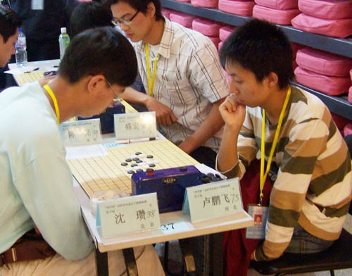
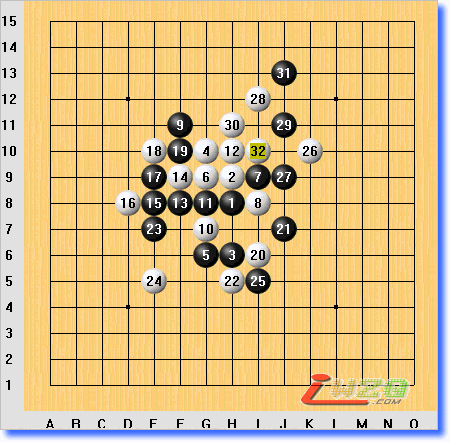
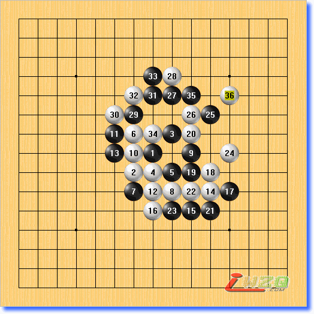
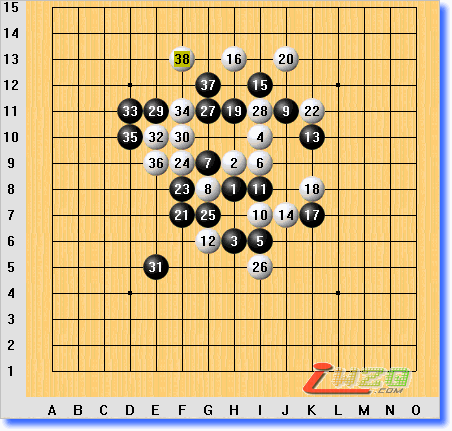

全国锦标赛 第一轮

开局：瑞星， 5A：G7， 开局人：芦鹏飞 交换：未交换
对手：易伊神（上海）执白 弈于：2007-10-3
这场比赛是全国赛的第一场比赛，输棋的原因在于我自信心不强，打的太过保守，明明有机会杀出的，结果因为自己太过保守而丧失了机会，丧失了先手，被对方一路攻杀，输掉了比赛。前11手双方按瑞星定式行棋，第12手白方变招（其实那点是白必败），经过长考，我的第13手选择了F8点，这点是没错的，白14选择的扩展，在局部给黑方施加了压力，黑15选择了冲4，这点似乎也没什么问题，白16被迫防守。这时我看到了白方有F10，E9的VCT，所以黑17选择了F9点防守，后来经过复盘，认为这点防守是欠考虑的，因为白方的胜是VCT而不是VCF，所以黑17应该先在E6点跳3，用进攻牵制对手，然后经过连续的冲三，不仅能有效的遏制住白方的进攻，同时在下方，黑棋也有很大的优势。可是在实战中17手走了F9点，白18是妙手，死死的站住了黑棋反攻的要点同己时更加扩大了自的优势。19无奈的防守。至此黑方陷入了被动。行至第28手时白方已经形成了必胜形，29的防守失误使得黑方速败。可以说黑方从第17手就失去了先手，第25手基本宣布了白方胜利! 最后白方在J10点抓了黑方四四禁手！白方胜利！
全国锦标赛 第二轮

开局：斜月， 5A：F9， 开局人：沈瓒 交换： 交换
对手：沈 瓒（北京）执白 弈于：2007-10-3
比赛结果：双方和棋
这是当天下午的第二轮的比赛，由对手开局，对手开的斜月。在2000年以前斜月一直被认为是平衡局，2000年以后有人研究出来斜月是黑优的，所以我选择了交换。16手之前都是定式，如果按定式黑17应该在K8落子，因为那个定式是白优的定式，所以我17手在长考之后选择的先在L6点跳3，白18按常理中间打断，黑19在J7点继续形成跳三，这时对手并没有急于落子，在考虑之后，白20走了一步妙手，堵在了跳三的上端，这是我没有算到的，因为想到前面的棋全都白算了，所以心理有点反映！黑21走在了K5点，这点是个低级错误，这点落下后，白可以走H4，I5点这样就能成功抓住黑棋在J6点的四四禁手！幸好这位北京选手跟我一样年轻并没多看，直接防住了我在J6点的四四禁手点！真是大难不死啊！23手挡在了I5点防住了白方的一个四三，其实23手如果在24那点防守会更好，以下黑方随曾多步扩展，无奈白棋步步强防，36手落下双方都没有任何机会，因此双方议和！
全国锦标赛 第三轮

开局：瑞星， 5A：I7， 开局人：芦鹏飞 交换： 交换
对手：韩 帅（黑龙江）执黑 弈于：2007-10-4
比赛结果：白胜
这是第二天上午的比赛，由我执黑开局，我开的是最平衡的瑞星开局，对手还是要求交换，交换后由他执黑，我执白。 前16手双方按定式行棋，黑第17手变招走在了K7点，其实黑17这点在理论是依旧是平衡，只是平时下的比较少，看来传说中东北人擅长瑞星是一点不假！白18落在了K8点，防住了黑棋进攻的要点，同时形成了一个斜线上的跳二！黑19落在了H11点，挡住了白棋的一个跳二，同时自己形成了一个横线上的跳二和一个斜线上的二，我的20手在上方防了黑棋的一个二后，对方的21手也防了我一手，同时准备下一步在F8点扩展，我的22手依旧防守，虽然我看出了他在F8的妙手扩展，但是在实战中我还是觉着黑棋在上面的优势也是不可小视的！果然黑棋在F8点扩展，我的24手选择了在上面防住他他的一个和上面的棋连接的要点，25步走在了G7点形成了一个活三，白26点选择了下面防守。黑棋的27，29手继续扩展，我依旧防守！然后黑棋的31手选择了在E5点继续扩展！我的32手选择了在上面活三，果然黑棋中计，把棋挡在了上方，形成了一个反四，我必挡中间，同时形成反三，至此无论黑棋防